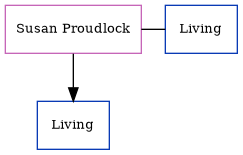

Susan Maxey (née Proudlock)
[ Home ] | [ Calendar ] | [ Surnames Index ] | [ Census Index ] | [ Family History ]Susan Proudlock, the wife of Noel Peter Maxey (the first cousin once-removed on the father's side of Nigel Horne), and married Noel (with whom she had 1 surviving child, Aiden Frederick) in Newcastle Upon Tyne, Northumberland, England around Nov 19951 (Oct/Nov/Dec).
Citations
- England & Wales, Marriage Index: 1916-2005 Online publication - Provo, UT, USA: The Generations Network, Inc., 2009.Original data - General Register Office. England and Wales Civil Registration Indexes. London, England: General Register Office. © Crown copyright. Published by permission of the Cont
Family Tree
Generated by ged2site. Last updated on Jun 11, 2024